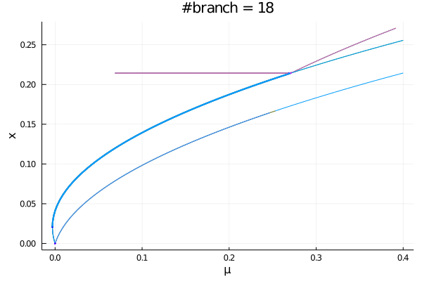

Automatic Bifurcation diagram computation
Thanks to the functionality presented in this part, we can compute the bifurcation diagram of a system recursively and fully automatically. More precisely, the function bifurcationdiagram allows to:
- compute a branch $\gamma$ of equilibria
- detect all bifurcations on the branch
- recursively compute the branches emanating from branch points on $\gamma$.
Pitfalls
For now, there is no way to decide if two branches $\gamma_1,\gamma_2$ are the same. As a consequence:
- there is no loop detection. Hence, if the branch $\gamma$ has a component akin to a circle, you may experience a large number of branches
- if the bifurcation diagram itself has loops (see example below), you may experience a large number of branches
The whole diagram is stored in RAM and you might be careful computing it on GPU. We'll add a file system for this in the future.
Basic example with simple branch points
using Revise, Plots
using BifurcationKit
Fbp(u, p) = @. -u * (p + u * (2-5u)) * (p -.15 - u * (2+20u))
# bifurcation problem
prob = BifurcationProblem(Fbp, [0.0], -0.2,
# specify the continuation parameter
(@optic _);
record_from_solution = (x, p) -> x[1])
# options for newton
# we reduce a bit the tolerances to ease automatic branching
opt_newton = NewtonPar(tol = 1e-9)
# options for continuation
opts_br = ContinuationPar(dsmin = 0.001, dsmax = 0.005, ds = 0.001,
newton_options = opt_newton,
nev = 1,
# parameter interval
p_min = -1.0, p_max = .3,
# detect bifurcations with bisection method
# we increase here the precision for the detection of
# bifurcation points
n_inversion = 8)
diagram = bifurcationdiagram(prob, PALC(),
# very important parameter. This specifies the maximum amount of recursion
# when computing the bifurcation diagram. It means we allow computing branches of branches
# at most in the present case.
2,
opts_br,
)
# You can plot the diagram like
plot(diagram; putspecialptlegend=false, markersize=2, plotfold=false, title = "#branches = $(size(diagram))")This gives
diagram[Bifurcation diagram]
┌─ From 0-th bifurcation point.
├─ Children number: 4
└─ Root (recursion level 1)
┌─ Curve type: EquilibriumCont
├─ Number of points: 76
├─ Type of vectors: Vector{Float64}
├─ Parameter p starts at -0.2, ends at 0.3
├─ Algo: PALC
└─ Special points:
- # 1, bp at p ≈ +0.00000281 ∈ (-0.00000065, +0.00000281), |δp|=3e-06, [converged], δ = ( 1, 0), step = 31
- # 2, bp at p ≈ +0.15000016 ∈ (+0.14999995, +0.15000016), |δp|=2e-07, [ guessL], δ = (-1, 0), step = 53
- # 3, endpoint at p ≈ +0.30000000, step = 75
Example with nonsimple branch points
To show the ability of the branch switching method to cope with non simple branch points, we look at the normal form of the Pitchfork with D6 symmetry which occurs frequently in problems with hexagonal symmetry. You may want to look at Bratu–Gelfand problem for a non trivial example of use.
using Revise, Plots
using BifurcationKit
const BK = BifurcationKit
function FbpD6(x, p)
return [ p.μ * x[1] + (p.a * x[2] * x[3] - p.b * x[1]^3 - p.c*(x[2]^2 + x[3]^2) * x[1]),
p.μ * x[2] + (p.a * x[1] * x[3] - p.b * x[2]^3 - p.c*(x[3]^2 + x[1]^2) * x[2]),
p.μ * x[3] + (p.a * x[1] * x[2] - p.b * x[3]^3 - p.c*(x[2]^2 + x[1]^2) * x[3])]
end
# model parameters
pard6 = (μ = -0.2, a = 0.3, b = 1.5, c = 2.9)
# problem
prob = BifurcationProblem(FbpD6, zeros(3), pard6, (@optic _.μ);
record_from_solution = (x, p) -> (n = norminf(x)))
# newton options
opt_newton = NewtonPar(tol = 1e-9, max_iterations = 20)
# continuation options
opts_br = ContinuationPar(
# we limit the step size to have smooth branches
dsmax = 0.005, ds = 0.001,
# parameter interval
p_max = 0.4, p_min = -0.25,
# number of eigenvalues to be computed
nev = 3,
newton_options = opt_newton,
max_steps = 1000,
# increased precision for bifurcation points
n_inversion = 4, max_bisection_steps = 20)
diagram = bifurcationdiagram(prob, PALC(), 3,
opts_br;
normC = norminf)[Bifurcation diagram]
┌─ From 0-th bifurcation point.
├─ Children number: 2
└─ Root (recursion level 1)
┌─ Curve type: EquilibriumCont
├─ Number of points: 89
├─ Type of vectors: Vector{Float64}
├─ Parameter μ starts at -0.2, ends at 0.4
├─ Algo: PALC
└─ Special points:
- # 1, nd at μ ≈ +0.00019961 ∈ (-0.00024233, +0.00019961), |δp|=4e-04, [converged], δ = ( 3, 0), step = 31
- # 2, endpoint at μ ≈ +0.40000000, step = 88
We can now plot the result:
plot(diagram; putspecialptlegend =false, markersize=2, plotfold=false, title="#branch = $(size(diagram))")
We can access the different branches with BK.getBranch(diagram, (1,)). Alternatively, you can plot a specific branch:

Finally, you can resume the computation of the bifurcation diagram if not complete by using the syntax
BK.bifurcationdiagram!(prob,
# this resume the computation of the diagram from the 2nd node
# diagram is written inplace
get_branch(diagram, (2,)), 6,
(args...) -> opts_br)[Bifurcation diagram]
┌─ From 1-th bifurcation point.
├─ Children number: 4
└─ Root (recursion level 2)
┌─ Curve type: EquilibriumCont from NonSimpleBranchPoint bifurcation point.
├─ Number of points: 79
├─ Type of vectors: Vector{Float64}
├─ Parameter μ starts at 0.00019960742344131129, ends at 0.4
├─ Algo: PALC
└─ Special points:
- # 1, nd at μ ≈ +0.00000131 ∈ (+0.00000131, +0.00019961), |δp|=2e-04, [ guess], δ = (-2, 0), step = 1
- # 2, bp at μ ≈ +0.06889046 ∈ (+0.06884936, +0.06889046), |δp|=4e-05, [converged], δ = (-1, 0), step = 24
- # 3, endpoint at μ ≈ +0.40000000, step = 78
Printing the structure of the diagram
It is sometimes useful to have a global representation of the bifurcation diagram. Here, we provide a text representation
using AbstractTrees
AbstractTrees.children(node::BK.BifDiagNode) = node.child
## Things that make printing prettier
AbstractTrees.printnode(io::IO, node::BifDiagNode) = print(io, "$(node.code) [ $(node.level)]")
print_tree(diagram)0 [ 1]
├─ 1 [ 2]
│ ├─ 2 [ 3]
│ ├─ 2 [ 3]
│ ├─ 4 [ 3]
│ ├─ 4 [ 3]
│ ├─ 4 [ 3]
│ ├─ 4 [ 3]
│ ├─ 4 [ 3]
│ └─ 4 [ 3]
└─ 1 [ 2]
├─ 2 [ 3]
├─ 2 [ 3]
├─ 2 [ 3]
└─ 2 [ 3]Plotting the structure of the diagram
We can also use GraphPlot to plot the tree underlying the bifurcation diagram:
using LightGraphs, MetaGraphs, GraphPlot
function graphFromDiagram!(_graph, diagram, indp)
# ind is the index of the parent node
# add vertex and associated information
add_vertex!(_graph)
set_props!(_graph, nv(_graph), Dict(:code => diagram.code, :level => diagram.level))
if nv(_graph) > 1
add_edge!(_graph, indp, nv(_graph))
end
if length(diagram.child) > 0
# we now run through the children
new_indp = nv(_graph)
for diag in diagram.child
graphFromDiagram!(_graph, diag, new_indp)
end
end
end
function graphFromDiagram(diagram)
_g = MetaGraph()
graphFromDiagram!(_g, diagram, 1)
return _g
end
_g = graphFromDiagram(bdiag)
gplot(_g, nodelabel = [props(_g, ve)[:code] for ve in vertices(_g)])which gives the following picture. The node label represent the index of the bifurcation point from which the branch branches.
Using GraphRecipes
Another solution is to use GraphRecipes and
using GraphRecipes
graphplot(_g,
node_weights = ones(nv(_g)).*10,
names=[props(_g, ve)[:code] for ve in vertices(_g)],
curvature_scalar=0.)